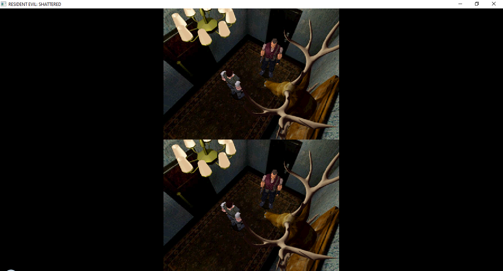

Available
Public test build v0.0.1 with launcher entry point, basic startup flow, and supported data-layout documentation.
Early public test build
A Resident Evil project built to share classic survival horror with your friends through experimental split-screen support.
No original Resident Evil game assets are included.
Users must provide their own legally obtained supported game data.
Public builds may contain bugs and incomplete behavior.
Why Shattered?
SHATTERED asks what happens when that fear becomes shared: when two players step into the same mansion, split attention across the room, and turn survival-horror tension into a co-op memory.
The goal is not to replace the original feeling. It is to preserve the mood, friction, and strange quiet of classic survival horror while opening a new way to experience it with a friend.
Current state
Public test build v0.0.1 with launcher entry point, basic startup flow, and supported data-layout documentation.
Split-screen support and gameplay behavior are still being explored and may change between builds.
The active source code, internal tools, research branches, and development assets are maintained outside this repository.
Screenshots

Setup
SHATTERED v0.0.1 is documented for Windows and a legally obtained copy of GOG's Resident Evil 1 PC Port. Other versions are not currently treated as supported public test targets.
Community
Help shape what gets tested next across Depmify's survival-horror projects.
Follow development, ask questions, share feedback, and report what breaks in public builds.
Organize sessions with other users for RESIDENT EVIL: SHATTERED or Silent Hill: United.
The server brings both communities together around multiplayer survival-horror testing, release news, and player coordination.
Support us
Depmify is a fan developer focused on bringing classic survival horror experiences closer to players who want to explore them together. Alongside RESIDENT EVIL: SHATTERED, Depmify also develops Silent Hill: United, an unofficial multiplayer project for Silent Hill 1 built around preserving atmosphere while adding shared presence.
Optional support helps with testing time, public builds, documentation, and the long process of turning strange survival-horror experiments into something people can actually play with friends.
No original game assets are sold or distributed. Support is for the time spent developing, testing, and maintaining fan project releases.
Support Depmify Silent Hill: United